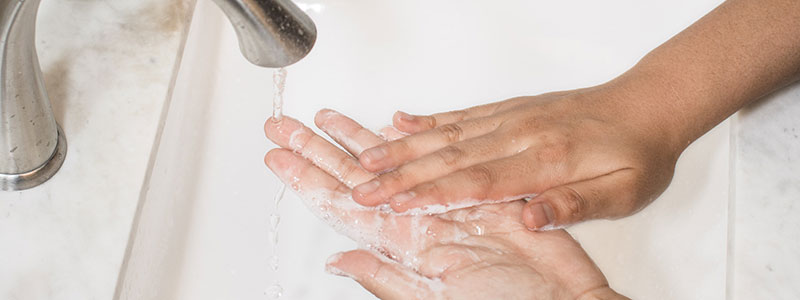

How to Stay Healthy
Keep Germs Away:
There are several important steps you can take to help reduce your exposure to COVID-19 and prevent the
spread of the disease.

Wash your hands often:
- At least once an hour and before eating, scrub your hands with soap and water for at least 20 seconds.
Need a timer? Sing “Happy Birthday” twice. Remember to wash your wrists, backs of your hands and under your
nails.
Dry your hands with a paper towel to remove residual germs, and use the paper towel to turn the faucet off
(so not to recontaminate your hands). Throw the towel away.
- Wash your hands immediately after coughing, sneezing or touching your nose, or if you have been in a
public place.
- If you don’t have soap and water, use a hand sanitizer that contains at least 60% alcohol to scrub your
hands, just as you would with soap and water.
Cover your mouth when you cough or sneeze:
- Use a tissue to cover your mouth and nose, and throw it away immediately. Then wash your hands with soap
and water for at least 20 seconds.
- No tissues? Cough or sneeze into your elbow or upper arm.
Avoid touching your face, especially your eyes, nose and mouth:
- Try to keep tissues on hand, and use these rather than touching directly.
Clean and disinfect all frequently touched items and surfaces:
- phones and keyboards
- remote controls, toys, frequently used appliances
- tables, counter-tops, desk-tops
- doorknobs, light switches
- faucets, toilet seats, cabinet pulls
Flattening the Curve
Mitigation efforts like social distancing can help to slow the outbreak, preventing hospitals from becoming
overwhelmed and reducing the number of cases until scientists develop treatments and, eventually, a vaccine.
Protect your mind as well as your body
It is natural to experience increased anxiety and stress because of the COVID-19 pandemic. It can be difficult
to know how to react, especially as news continually changes. We encourage you to take notice and prioritize
your mental health because it impacts your physical health, too.
Here are a few tips to relieve anxiety and stress:
- Limit exposure to news.
- Attend to your whole health.
- Enjoy life.
- Seek help.
The following resources are available to you:
- Metro’s Crisis Support Center: 615-244-7444
- Metro’s Mobile Crisis Unit: 615-726-0125
- Metro Nashville’s Behavioral Health and Wellness Services
- National Alliance on Mental Illness of Middle Tennessee
- Metro Public Health Department COVID-19 Information Hotline: 615-862-7777, open daily, 7 a.m.-7 p.m
- Tennessee Department of Health Coronavirus Public Information Line: 877-857-2945 open daily, 10 a.m. to 10 p.m.